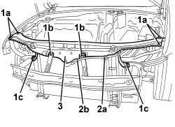
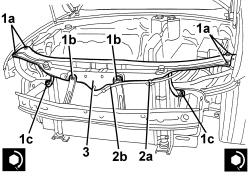

7210A15 R.R. FRONT WING/HEADLAMP HOUSING CROSSMEMBER
- Path
- Procedures > 72 PANELS AND FRAMES > 7210 REMOVING-REFITTING > 7210A STRUCTURAL ELEMENTS (FRONT PART) > 7210A15 R.R. FRONT WING/HEADLAMP HOUSING CROSSMEMBER
- Kind
- repair procedure (removal / refitting; the operation number is the code)
- Applies to
- all engines; all production periods
- Interactive page
- https://sloeber94.github.io/elrnDB-aBrrSpdr/en/#/946002717
Applies to: all engines; all production periods
 Removing
Removing
 Refitting
RefittingOp. 7055B54 UNDER ENGINE PROTECTION/GUARD - R.R.
Op. 5540B70 LEFT FRONT LIGHT CLUSTER WITH DIRECTION INDICATOR - R.R.
Op. 5540B71 RIGHT FRONT LIGHT CLUSTER WITH DIRECTION INDICATOR - R.R.
Op. 7025A34 BONNET LID LOCK (ONE) - R+R OR REPAIR
1. Undo the bolts (1a) and (1b) and nuts (1c).
2. Disconnect retainer (2a) of bonnet lid opening cable (2b).
3. Remove the crossmember.

Applies to: all engines; all production periods
Refitting
Removing- Check that the crossmember is not damaged.
1. Screw in bolts (1a) and (1b) and nuts (1c) without tightening.
2. Connect bonnet lid opening cable retainer (2a).
3. Adjust the crossmember in relation to the wings and bonnet lid, using the slotted holes for the bolts and nuts (1a, 1b and 1c). After adjustment, tighten the nuts and bolts.
Component | Fastening | dia | Value (daNm) | Validity |
|---|---|---|---|---|
HEADLAMP HOLDER CROSSMEMBER | Bolt | M8 | 2.2 ÷ 2.6 |
Component | Fastening | dia | Value (daNm) | Validity |
|---|---|---|---|---|
HEADLAMP HOLDER CROSSMEMBER | Nut | M8 | 2.2 ÷ 2.6 |

Applies to: all engines; all production periods
Op. 7025A34 BONNET LID LOCK (ONE) - R+R OR REPAIR
Op. 5540B71 RIGHT FRONT LIGHT CLUSTER WITH DIRECTION INDICATOR - R.R.
Op. 5540B70 LEFT FRONT LIGHT CLUSTER WITH DIRECTION INDICATOR - R.R.
Topics linked from this page (5)
- 5540B70 LEFT FRONT LIGHT CLUSTER WITH DIRECTION INDICATOR - R.R.
- 5540B71 RIGHT FRONT LIGHT CLUSTER WITH DIRECTION INDICATOR - R.R.
- 7025A34 BONNET LID LOCK (ONE) - R+R OR REPAIR
- 7055B54 UNDER ENGINE PROTECTION/GUARD - R.R.
- 7210E10 R.R. FRONT BUMPER
Topics that link to this page (11)
- 1004B10 POWER UNIT WITH MANUAL GEARBOX - R.R
- 1004B14 POWER UNIT WITH AUTOMATIC TRANSMISSION R + R
- 1004B24 POWER UNIT WITH MANUAL GEARBOX WITH HYDRAULIC SELECTION - R.R.
- 1084C34 ENGINE OIL COOLING RADIATOR - R + R
- 1088B20 ENGINE COOLING RADIATOR - R + R
- 1088B36 UPPER PIN SUPPORTING ENGINE COOLING RADIATOR (ONE), LH OR RH - R&R
- 4130B45 RETURN PIPE FROM HEAT EXCHANGER TO POWER ASSISTED STEERING FLUID RESERVOIR - R.R.
- 4130B52 HEAT EXCHANGER PIPE - R+R
- 7210A31 R R FRONT SHOCK ABSORBER ATTACHMENT DOME, (ONE) LH OR RH
- 7210A32 R.R. PARTIAL FRONT SHOCK ABSORER TURRET MOUNTING (ONE), LEFT OR RIGHT
- 7210A35 R.R. LOWER FRONT STRUT/SIDE PANEL (COMPLETE) (ONE) LEFT OR RIGHT